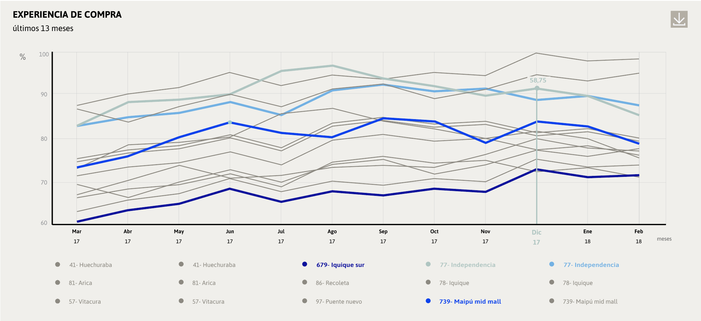

Gráfico que muestra puntos ubicados en coordenadas x e y. Los puntos deben representar datos contínuos que se conectan para representar la diferencia de valores en el tiempo. Si los datos no tienen relación entre sí y no varían según el tiempo ocupar Gráfico de Barra.
CRITERIOS DE ELECCIÓN
Usar cuando se quiere demostrar y comparar cambios en el tiempo.
| Mínimo de líneas |
1 |
| Máximo de líneas |
18 |
CRITERIOS DE IMPLEMENTACIÓN
Este gráfico puede ser utilizado con tres anchos distintos; 4, 6 y 12 columnas.
Variaciones de tamaño y uso de color
El de 4 columnas de ancho se recomienda para gráficos de entre 1 a 5 líneas y se utiliza paleta primaria.
El gráfico de 6 columnas de ancho se recomienda para gráficos de entre 11 a 18 líneas y se utiliza solo un tono de gris.

ANTERIOR
SIGUIENTE